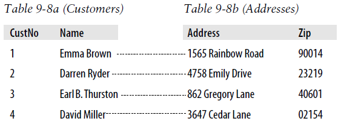
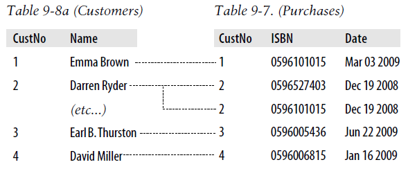
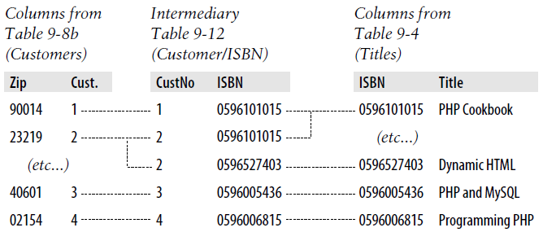
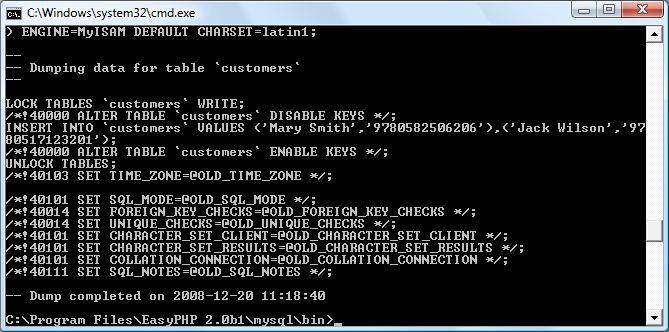

Mastering MySQL
Chapter 8
provided you with a good grounding in the practice of using relational
databases with Structured Query Language. You’ve learned about creating databases
and the tables they comprise, as well as inserting, looking up, changing, and deleting
data.
With that knowledge under your belt, we now need to look at how to design databa‐
ses for maximum speed and efficiency. For example, how do you decide what data to
place in which table? Well, over the years, a number of guidelines have been devel‐
oped that—if you follow them—ensure that your databases will be efficient and capa‐
ble of growing as you feed them more and more data.
Database Design
It’s very important that you design a database correctly before you start to create it;
otherwise, you are almost certainly going to have to go back and change it by splitting
up some tables, merging others, and moving various columns about in order to ach‐
ieve sensible relationships that MySQL can easily use.
Sitting down with a sheet of paper and a pencil and writing down a selection of the
queries that you think you and your users are likely to ask is an excellent starting
point. In the case of an online bookstore’s database, some of your questions could be:
•
How many authors, books, and customers are in the database?
•
Which author wrote a certain book?
•
Which books were written by a certain author?
•
What is the most expensive book?
•
What is the best-selling book?
•
Which books have not sold this year?
•
Which books did a certain customer buy?
•
Which books have been purchased along with the same other books?
Of course, there are many more queries that you could make on such a database, but
even this small sample will begin to give you insights into how to lay out your tables.
For example, books and ISBNs can probably be combined into one table, because
they are closely linked (we’ll examine some of the subtleties later). In contrast, books
and customers should be in separate tables, because their connection is very loose. A
customer can buy any book, and even multiple copies of a book, yet a book can be
bought by many customers and be ignored by still more potential customers.
When you plan to do a lot of searches on something, it can often benefit by having its
own table. And when couplings between things are loose, it’s best to put them in sep‐
arate tables.
Taking into account those simple rules of thumb, we can guess we’ll need at least
three tables to accommodate all these queries:
Authors
There will be lots of searches for authors, many of whom have collaborated on titles, and many of whom will be featured in collections. Listing all the information about each author together, linked to that author, will produce optimal results for searches —hence an Authors table.
Books
Many books appear in different editions. Sometimes they change publisher and sometimes they have the same titles as other, unrelated books. So the links between books and authors are complicated enough to call for a separate table.
Customers
It’s even more clear why customers should get their own table, as they are free to purchase any book by any author.
Primary Keys: The Keys to Relational Databases
Using the power of relational databases, we can define information for each author,
book, and customer in just one place. Obviously, what interests us is the links
between them—such as who wrote each book and who purchased it—but we can
store that information just by making links between the three tables. I’ll show you the
basic principles, and then it just takes practice for it to feel natural.
The magic involves giving every author a unique identifier. Do the same for every
book and for every customer. We saw the means of doing that in the previous chap‐
ter: the
primary key
. For a book, it makes sense to use the ISBN, although you then
have to deal with multiple editions that have different ISBNs. For authors and cus‐
tomers, you can just assign arbitrary keys, which the
AUTO_INCREMENT
feature that
you saw in the last chapter makes easy.
In short, every table will be designed around some object that you’re likely to search
for a lot—an author, book, or customer, in this case—and that object will have a pri‐
mary key. Don’t choose a key that could possibly have the same value for different
objects. The ISBN is a rare case for which an industry has provided a primary key
that you can rely on to be unique for each product. Most of the time, you’ll create an
arbitrary key for this purpose, using
AUTO_INCREMENT
.
Normalization
The process of separating your data into tables and creating primary keys is called
normalization
. Its main goal is to make sure each piece of information appears in the
database only once. Duplicating data is inefficient, because it makes databases larger
than they need to be and therefore slows access. But, more important, the presence of
duplicates creates a strong risk that you’ll update only one row of duplicated data,
creating inconsistencies in a database and potentially causing serious errors.
Thus, if you list the titles of books in the
Authors
table as well as the
Books
table, and
you have to correct a typographic error in a title, you’ll have to search through both
tables and make sure you make the same change every place the title is listed. It’s bet‐
ter to keep the title in one place and use the ISBN in other places.
But in the process of splitting a database into multiple tables, it’s important not to go
too far and create more tables than is necessary, which would also lead to inefficient
design and slower access.
Luckily, E. F. Codd, the inventor of the relational model, analyzed the concept of nor‐
malization and split it into three separate schemas called
First
,
Second
, and
Third Nor‐
mal Form
. If you modify a database to satisfy each of these forms in order, you will
ensure that your database is optimally balanced for fast access, and minimum mem‐
ory and disk space usage.
To see how the normalization process works, let’s start with the rather monstrous
database in
Table 9-1
, which shows a single table containing all of the author names,
book titles, and (fictional) customer details. You could consider it a first attempt at a
table intended to keep track of which customers have ordered books. Obviously, this
is inefficient design, because data is duplicated all over the place (duplications are
highlighted), but it represents a starting point.
Table 9-1. A highly inefficient design for a database table
| Author 1 |
Author 2 |
Title |
ISBN |
Price $US |
Customer Name |
Customer Address |
Purchase Date |
| David Sklar |
Adam Trachtenberg |
PHP Cookbook |
0596101015 |
44.99 |
Emma Brown |
1565 Rainbow Road, Los Angeles, CA 90014 |
Mar 03 2009 |
| Danny Goodman |
|
Dynamic HTML |
0596527403 |
59.99 |
Darren Ryder 4758 Emily Drive, Richmond, VA 23219 |
Dec 19 2008 |
| Hugh E Williams |
David Lane |
PHP And MySQL |
0596005436 |
44.95 |
Earl B. Thurston |
862 Gregory Lane, Frankfort, KY 40601 |
Jun 22 2009 |
| David Sklar |
Adam Trachtenberg |
PHP Cookbook |
0596101015 |
44.99 |
Darren Ryder |
4758 Emily Drive, Richmond, VA 23219 |
Dec 19 2008 |
| Rasmus Lerdorf |
Kevin Tatroe & Peter MacIntyre |
Programming PHP |
0596006815 |
39.99 |
David Miller |
3647 Cedar Lane, Waltham, MA 02154 |
Jan 16 2009 |
In the following three sections, we will examine this database design, and you’ll see
how we can improve it by removing the various duplicate entries and splitting the
single table into multiple tables, each containing one type of data.
First Normal Form
For a database to satisfy the
First Normal Form
, it must fulfill three requirements:
•
There should be no repeating columns containing the same kind of data.
•
All columns should contain a single value.
•
There should be a primary key to uniquely identify each row.
Looking at these requirements in order, you should notice straightaway that both the
Author 1
and
Author 2
columns constitute repeating data types. So we already have a
target column for pulling into a separate table, as the repeated
Author
columns violate
Rule 1.
Second, there are three authors listed for the final book,
Programming PHP
. I’ve handled that by making Kevin Tatroe and Peter MacIntyre share the
Author 2
column,
which violates Rule 2—yet another reason to transfer the
Author
details to a separate
table.
However, Rule 3 is satisfied, because the primary key of ISBN has already been cre‐
ated.
Table 9-2
shows the result of removing the
Authors
columns from
Table 9-1
. Already
it looks a lot less cluttered, although there remain duplications that are highlighted.
Table 9-2. The result of stripping the Authors columns from
Table 9-1
| Title |
ISBN |
Price $US |
Customer Name |
Customer Address |
Purchase Date |
| PHP Cookbook |
0596101015 |
44.99 |
Emma Brown |
1565 Rainbow Road, Los Angeles, CA 90014 |
Mar 03 2009 |
| Dynamic HTML |
0596527403 |
59.99 |
Darren Ryder |
4758 Emily Drive, Richmond, VA 23219 |
Dec 19 2008 |
| PHP and MySQL |
0596005436 |
44.95 |
Earl B. Thurston |
862 Gregory Lane, Frankfort, KY 40601 |
Jun 22 2009 |
| PHP Cookbook |
0596101015 |
44.99 |
Darren Ryder |
4758 Emily Drive, Richmond, VA 23219 |
Dec 19 2008 |
| Programming PHP |
0596006815 |
39.99 |
David Miller |
3647 Cedar Lane, Waltham, MA 02154 |
Jan 16 2009 |
The new
Authors
table shown in
Table 9-3
is small and simple. It just lists the ISBN of
a title along with an author. If a title has more than one author, additional authors get
their own rows. At first, you may feel ill at ease with this table, because you can’t tell
which author wrote which book. But don’t worry: MySQL can quickly tell you. All
you have to do is tell it which book you want information for, and MySQL will use its
ISBN to search the
Authors
table in a matter of milliseconds.
Table 9-3. The new Authors table
| ISBN |
Author |
| 0596101015 |
David Sklar |
| 0596101015 |
Adam Trachtenberg |
| 0596527403 |
Danny Goodman |
| 0596005436 |
Hugh E Williams |
| 0596005436 |
David Lane |
| 0596006815 |
Rasmus Lerdorf |
| 0596006815 |
Kevin Tatroe |
| 0596006815 |
Peter MacIntyre |
As I mentioned earlier, the ISBN will be the primary key for the
Books
table, when we
get around to creating that table. I mention that here in order to emphasize that the
ISBN is not, however, the primary key for the
Authors
table. In the real world, the
Authors
table would deserve a primary key, too, so that each author would have a key
to uniquely identify him or her.
So, in the
Authors
table, the ISBN is just a column for which—for the purposes of
speeding up searches—we’ll probably make a key, but not the primary key. In fact, it
cannot
be the primary key in this table, because it’s not unique: the same ISBN
appears multiple times whenever two or more authors have collaborated on a book.
Because we’ll use it to link authors to books in another table, this column is called a
foreign
key.
Keys (also called
indexes
) have several purposes in MySQL. The
fundamental reason for defining a key is to make searches faster.
You’ve seen examples in
Chapter 8
in which keys are used in
WHERE
clauses for searching. But a key can also be useful to uniquely iden‐
tify an item. Thus, a unique key is often used as a primary key in
one table, and as a foreign key to link rows in that table to rows in
another table.
Second Normal Form
The First Normal Form deals with duplicate data (or redundancy) across multiple
columns. The
Second Normal Form
is all about redundancy across multiple rows. To
achieve Second Normal Form, your tables must already be in First Normal Form.
Once this has been done, we achieve Second Normal Form by identifying columns
whose data repeats in different places and then removing them to their own tables.
So let’s look again at
Table 9-2
. Notice how Darren Ryder bought two books and
therefore his details are duplicated. This tells us that the
Customer
columns need to
be pulled into their own tables.
Table 9-4
shows the result of removing the
Customer
columns from
Table 9-2
.
Table 9-4. The new Titles table
| ISBN |
Title |
Price |
| 0596101015 |
PHP Cookbook |
44.99 |
| 0596527403 |
Dynamic HTML |
59.99 |
| 0596005436 |
PHP and MySQL |
44.95 |
| 0596006815 |
Programming PHP |
39.99 |
As you can see, all that’s left in
Table 9-4
are the
ISBN
,
Title
, and
Price
columns for
four unique books, so this now constitutes an efficient and self-contained table that
satisfies the requirements of both the First and Second Normal Forms. Along the way,
we’ve managed to reduce the information to data closely related to book titles. This
table could also include years of publication, page counts, numbers of reprints, and so
on, as these details are also closely related. The only rule is that we can’t put in any
column that could have multiple values for a single book, because then we’d have to
list the same book in multiple rows and would thus violate Second Normal Form.
Restoring an
Author
column, for instance, would violate this normalization.
However, looking at the extracted
Customer
columns, now in
Table 9-5
, we can see
that there’s still more normalization work to do, because Darren Ryder’s details are
still duplicated. And it could also be argued that First Normal Form Rule 2 (all col‐
umns should contain a single value) has not been properly complied with, because
the addresses really need to be broken into separate columns for
Address
,
City
,
State
,
and
Zip code
.
Table 9-5. The Customer details from
Table 9-2
| ISBN |
Customer Name |
Customer Address |
Purchase Date |
| 0596101015 |
Emma Brown |
1565 Rainbow Road, Los Angeles, CA 90014 |
Mar 03 2009 |
| 0596527403 |
Darren Ryder |
4758 Emily Drive, Richmond, VA 23219 |
Dec 19 2008 |
| 0596005436 |
Earl B. Thurston |
862 Gregory Lane, Frankfort, KY 40601 |
Jun 22 2009 |
| 0596101015 |
Darren Ryder |
4758 Emily Drive, Richmond, VA 23219 |
Dec 19 2008 |
| 0596006815 |
David Miller |
3647 Cedar Lane, Waltham, MA 02154 |
Jan 16 2009 |
What we have to do is split this table further to ensure that each customer’s details are
entered only once. Because the ISBN is not and cannot be used as a primary key to
identify customers (or authors), a new key must be created.
Table 9-6
is the result of normalizing the
Customers
table into both First and Second
Normal Forms. Each customer now has a unique customer number called
CustNo
that is the table’s primary key, and that will most likely have been created via
AUTO_INCREMENT
. All the parts of customer addresses have also been separated into
distinct columns to make them easily searchable and updateable.
Table 9-6. The new Customers table
| CustNo |
Name |
Address |
City |
State |
Zip |
| 1 |
Emma Brown |
1565 Rainbow Road |
Los Angeles |
CA |
90014 |
| 2 |
Darren Ryder |
4758 Emily Drive |
Richmond |
VA |
23219 |
| 3 |
Earl B. Thurston |
862 Gregory Lane |
Frankfort |
KY |
40601 |
| 4 |
David Miller |
3647 Cedar Lane |
Waltham |
MA |
02154 |
At the same time, in order to normalize
Table 9-6
, we had to remove the information
on customer purchases, because otherwise, there would be multiple instances of cus‐
tomer details for each book purchased. Instead, the purchase data is now placed in a
new table called
Purchases
(see
Table 9-7
).
Table 9-7. The new Purchases table
| CustNo |
ISBN |
Date |
| 1 |
0596101015 |
Mar 03 2009 |
| 2 |
0596527403 |
Dec 19 2008 |
| 2 |
0596101015 |
Dec 19 2008 |
| 3 |
0596005436 |
Jun 22 2009 |
| 4 |
0596006815 |
Jan 16 2009 |
Here the
CustNo
column from
Table 9-6
is reused as a key to tie both the
Customers
and the
Purchases
tables together. Because the ISBN column is also repeated here, this
table can be linked with either of the
Authors
or the
Titles
tables, too.
The
CustNo
column can be a useful key in the
Purchases
table, but it’s not a primary
key. A single customer can buy multiple books (and even multiple copies of one
book), so the
CustNo
column is not a primary key. In fact, the
Purchases
table has no
primary key. That’s all right, because we don’t expect to need to keep track of unique
purchases. If one customer buys two copies of the same book on the same day, we’ll
just allow two rows with the same information. For easy searching, we can define
both
CustNo
and
ISBN
as keys—just not as primary keys.
There are now four tables, one more than the three we had initially
assumed would be needed. We arrived at this decision through the
normalization processes, by methodically following the First and
Second Normal Form rules, which made it plain that a fourth table
called
Purchases
would also be required.
The
tables
we
now
have
are
Authors
(
Table
9-3
),
Titles
(
Table
9-4
),
Customers
(
Table 9-6
), and
Purchases
(
Table 9-7
), and we can link each table to any other using
either the
CustNo
or the
ISBN
keys.
For example, to see which books Darren Ryder has purchased, you can look him up
in
Table 9-6
, the
Customers
table, where you will see his
CustNo
is 2. Armed with this
number, you can now go to
Table 9-7
, the
Purchases
table; looking at the ISBN col‐
umn here, you will see that he purchased titles 0596527403 and 0596101015 on
December 19, 2008. This looks like a lot of trouble for a human, but it’s not so hard
for MySQL.
To determine what these titles were, you can then refer to
Table 9-4
, the
Titles
table,
and see that the books he bought were
Dynamic HTML
and
PHP Cookbook
. Should
you wish to know the authors of these books, you could also use the ISBNs you just
looked up on
Table 9-3
, the
Authors
table, and you would see that ISBN 0596527403,
Dynamic HTML
, was written by Danny Goodman, and that ISBN 0596101015,
PHP
Cookbook
, was written by David Sklar and Adam Trachtenberg.
Third Normal Form
Once you have a database that complies with both the First and Second Normal
Forms, it is in pretty good shape and you might not have to modify it any further.
However, if you wish to be very strict with your database, you can ensure that it
adheres to the
Third Normal Form
, which requires that data that is
not
directly depen‐
dent on the primary key but
is
dependent on another value in the table should also be
moved into separate tables, according to the dependence.
For example, in
Table 9-6
, the
Customers
table, it could be argued that the
State
,
City
,
and
Zip code
keys are not directly related to each customer, because many other peo‐
ple will have the same details in their addresses, too. However, they are directly
related to each other, in that the street
Address
relies on the
City
, and the
City
relies
on the
State
.
Therefore, to satisfy Third Normal Form for
Table 9-6
, you would need to split it into
Table 9-8
through
Table 9-11
.
Table 9-8. Third Normal Form Customers table
| CustNo |
Name |
Address |
Zip |
| 1 |
Emma Brown |
1565 Rainbow Road |
90014 |
| 2 |
Darren Ryder |
4758 Emily Drive |
23219 |
| 3 |
Earl B. Thurston |
862 Gregory Lane |
40601 |
| 4 |
David Miller |
3647 Cedar Lane |
02154 |
Table 9-9. Third Normal Form Zip codes table
| Zip |
CityID |
| 90014 |
1234 |
| 23219 |
5678 |
| 40601 |
4321 |
| 02154 |
8765 |
Table 9-10. Third Normal Form Cities table
| CityID |
Name |
StateID |
| 1234 |
Los Angeles |
5 |
| 5678 |
Richmond |
46 |
| 4321 |
Frankfort |
17 |
| 8765 |
Waltham |
21 |
Table 9-11. Third Normal Form States table
| StateID |
Name |
Abbreviation |
| 5 |
California |
CA |
| 46 |
Virginia |
VA |
| 17 |
Kentucky |
KY |
| 21 |
Massachusetts |
MA |
So, how would you use this set of four tables instead of the single
Table 9-6
? Well, you
would look up the
Zip
code
in
Table 9-8
, and then find the matching
CityID
in
Table 9-9
. Given this information, you could look up the city
Name
in
Table 9-10
and
then also find the
StateID
, which you could use in
Table 9-11
to look up the State’s
Name
.
Although using the Third Normal Form in this way may seem like overkill, it can
have advantages. For example, take a look at
Table 9-11
, where it has been possible to
include both a state’s name and its two-letter abbreviation. It could also contain popu‐
lation details and other demographics, if you desired.
Table 9-10
could also contain even more localized demographics
that could be useful to you and/or your customers. By splitting up
these pieces of data, you can make it easier to maintain your data‐
base in the future, should it be necessary to add columns.
Deciding whether to use the Third Normal Form can be tricky. Your evaluation
should rest on what data you may need to add at a later date. If you are absolutely
certain that the name and address of a customer is all that you will ever require, you
probably will want to leave out this final normalization stage.
On the other hand, suppose you are writing a database for a large organization such
as the U.S. Postal Service. What would you do if a city were to be renamed? With a
table such as
Table 9-6
, you would need to perform a global search-and-replace on
every instance of that city. But if you have your database set up according to the Third
Normal Form, you would have to change only a single entry in
Table 9-10
for the
change to be reflected throughout the entire database.
Therefore, I suggest that you ask yourself two questions to help you decide whether
to perform a Third Normal Form normalization on any table:
•
Is it likely that many new columns will need to be added to this table?
•
Could any of this table’s fields require a global update at any point?
If either of the answers is yes, you should probably consider performing this final
stage of normalization.
When Not to Use Normalization
Now that you know all about normalization, I’m going to tell you why you should
throw these rules out of the window on high-traffic sites. That’s right—you should
never fully normalize your tables on sites that will cause MySQL to thrash.
Normalization requires spreading data across multiple tables, and this means making
multiple calls to MySQL for each query. On a very popular site, if you have normal‐
ized tables, your database access will slow down considerably once you get above a
few dozen concurrent users, because they will be creating hundreds of database
accesses between them. In fact, I would go so far as to say you should denormalize
any commonly looked-up data as much as you can.
You see, if you have data duplicated across your tables, you can substantially reduce
the number of additional requests that need to be made, because most of the data you
want is available in each table. This means that you can simply add an extra column
to a query and that field will be available for all matching results.
Of course, you have to deal with the downsides previously mentioned, such as using
up large amounts of disk space, and ensuring that you update every single duplicate
copy of data when one of them needs modifying.
Multiple updates can be computerized, though. MySQL provides a feature called
triggers
that make automatic changes to the database in response to changes you make.
(Triggers are, however, beyond the scope of this book.) Another way to propagate
redundant data is to set up a PHP program to run regularly and keep all copies in
sync. The program reads changes from a “master” table and updates all the others.
(You’ll see how to access MySQL from PHP in the next chapter.)
However, until you are very experienced with MySQL, I recommend that you fully
normalize all your tables (at least to First and Second Normal Form), as this will
instill the habit and put you in good stead. Only when you actually start to see
MySQL logjams should you consider looking at denormalization.
Relationships
MySQL is called a
relational
database management system because its tables store not
only data but the
relationships
among the data. There are three categories of relation‐
ships.
One-to-One
A
one-to-one relationship
is like a (traditional) marriage: each item has a relationship
to only one item of the other type. This is surprisingly rare. For instance, an author
can write multiple books, a book can have multiple authors, and even an address can
be associated with multiple customers. Perhaps the best example in this chapter so far
of a one-to-one relationship is the relationship between the name of a state and its
two-character abbreviation.
However, for the sake of argument, let’s assume that there can always be only one cus‐
tomer at any address. In such a case, the Customers–Addresses relationship in
Figure 9-1
is a one-to-one relationship: only one customer lives at each address, and
each address can have only one customer.

Figure 9-1. The Customers table,
Table 9-8
, split into two tables
Usually, when two items have a one-to-one relationship, you just include them as col‐
umns in the same table. There are two reasons for splitting them into separate tables:
•
You want to be prepared in case the relationship changes later.
•
The table has a lot of columns, and you think that performance or maintenance
would be improved by splitting it.
Of course, when you build your own databases in the real world, you will have to cre‐
ate one-to-many Customer–Address relationships (
one
address,
many
customers).
One-to-Many
One-to-many
(or many-to-one) relationships occur when one row in one table is
linked to many rows in another table. You have already seen how
Table 9-8
would
take on a one-to-many relationship if multiple customers were allowed at the same
address, which is why it would have to be split up if that were the case.
So, looking at Table 9-8a within
Figure 9-1
, you can see that it shares a one-to-many
relationship with
Table 9-7
because there is only one of each customer in Table 9-8a.
However
Table 9-7
, the
Purchases
table, can (and does) contain more than one pur‐
chase from customers. Therefore,
one
customer has a relationship with
many
purcha‐
ses.
You can see these two tables alongside each other in
Figure 9-2
, where the dashed
lines joining rows in each table start from a single row in the lefthand table but can
connect to more than one row on the righthand table. This one-to-many relationship
is also the preferred scheme to use when describing a many-to-one relationship, in
which case you would normally swap the left and right tables to view them as a one-
to-many relationship.

Figure 9-2. Illustrating the relationship between two tables
Many-to-Many
In a
many-to-many relationship
, many rows in one table are linked to many rows in
another table. To create this relationship, add a third table containing the same key
column from each of the other tables. This third table contains nothing else, as its
sole purpose is to link up the other tables.
Table 9-12
is just such a table. It was extracted from
Table 9-7
, the
Purchases
table, but
omits the purchase date information. It contains a copy of the ISBN of every title
sold, along with the customer number of each purchaser.
Table 9-12. An intermediary table
| Customer |
ISBN |
| 1 |
0596101015 |
| 2 |
0596527403 |
| 2 |
0596101015 |
| 3 |
0596005436 |
| 4 |
0596006815 |
With this intermediary table in place, you can traverse all the information in the data‐
base through a series of relations. You can take an address as a starting point and find
out the authors of any books purchased by the customer living at that address.
For example, let’s suppose that you want to find out about purchases in the 23219 zip
code. Look that zip code up in Table 9-8b, and you’ll find that customer number 2 has
bought at least one item from the database. At this point, you can use Table 9-8a to
find out his or her name, or use the new intermediary
Table 9-12
to see the book(s)
purchased.
From here, you will find that two titles were purchased and can follow them back to
Table 9-4
to find the titles and prices of these books, or to
Table 9-3
to see who the
authors were.
If it seems to you that this is really combining multiple one-to-many relationships,
then you are absolutely correct. To illustrate,
Figure 9-3
brings three tables together.

Figure 9-3. Creating a many-to-many relationship via a third table
Follow any zip code in the lefthand table to associated customer IDs. From there, you
can link to the middle table, which joins the left and right tables by linking customer
IDs and ISBNs. Now all you have to do is follow an ISBN over to the right-hand table
to see which book it relates to.
You can also use the intermediary table to work your way backward from book titles
to zip codes. The
Titles
table can tell you the ISBN, which you can use in the middle
table to find ID numbers of customers who bought the books, and finally, you can use
the
Customers
table to match the customer ID numbers to the customers’ zip codes.
Databases and Anonymity
An interesting aspect of using relations is that you can accumulate a lot of informa‐
tion about some item—such as a customer—without actually knowing who that cus‐
tomer is. Note that in the previous example we went from customers’ zip codes to
customers’ purchases, and back again, without finding out the name of a customer.
Databases can be used to track people, but they can also be used to help preserve peo‐
ple’s privacy while still finding useful information.
Transactions
In some applications, it is vitally important that a sequence of queries runs in the cor‐
rect order and that every single query successfully completes. For example, suppose
that you are creating a sequence of queries to transfer funds from one bank account
to another. You would not want either of the following events to occur:
•
You add the funds to the second account, but when you try to subtract them
from the first account, the update fails, and now both accounts have the funds.
•
You subtract the funds from the first bank account, but the update request to add
them to the second account fails, and the funds have disappeared into thin air.
As you can see, not only is the order of queries important in this type of transaction,
but it is also vital that all parts of the transaction complete successfully. But how can
you ensure this happens, because surely after a query has occurred, it cannot be
undone? Do you have to keep track of all parts of a transaction and then undo them
all one at a time if any one fails? The answer is absolutely not, because MySQL comes
with powerful transaction-handling features to cover just these types of eventualities.
In addition, transactions allow concurrent access to a database by many users or pro‐
grams at the same time. MySQL handles this seamlessly by ensuring that all transac‐
tions are queued and that users or programs take their turns and don’t tread on each
other’s toes.
Transaction Storage Engines
To be able to use MySQL’s transaction facility, you have to be using MySQL’s
InnoDB
storage engine. This is easy to do, as it’s simply another parameter that you use when
creating a table. So go ahead and create a table of bank accounts by typing the com‐
mands in
Example 9-1
. (Remember that to do this, you will need access to the
MySQL command line, and must also have already selected a suitable database in
which to create this table.)
Example 9-1. Creating a transaction-ready table
CREATE TABLE accounts (
number INT, balance FLOAT, PRIMARY KEY(number)
) ENGINE InnoDB;
DESCRIBE accounts;
The final line of this example displays the contents of the new table so you can ensure
that it was correctly created. The output from it should look like this:
+---------+---------+------+-----+---------+-------+
| Field | Type | Null | Key | Default | Extra |
+---------+---------+------+-----+---------+-------+
| number | int(11) | NO | PRI | 0 | |
| balance | float | YES | | NULL | |
+---------+---------+------+-----+---------+-------+
2 rows in set (0.00 sec)
Now let’s create two rows within the table so that you can practice using transactions.
Type the commands in
Example 9-2
.
Example 9-2. Populating the accounts table
INSERT INTO accounts(number, balance) VALUES(12345, 1025.50);
INSERT INTO accounts(number, balance) VALUES(67890, 140.00);
SELECT * FROM accounts;
The third line displays the contents of the table to confirm that the rows were cor‐
rectly inserted. The output should look like this:
+--------+---------+
| number | balance |
+--------+---------+
| 12345 | 1025.5 |
| 67890 | 140 |
+--------+---------+
2 rows in set (0.00 sec)
With this table created and prepopulated, you are ready to start using transactions.
Using BEGIN
Transactions in MySQL start with either a
BEGIN
or a
START TRANSACTION
statement.
Type the commands in
Example 9-3
to send a transaction to MySQL.
Example 9-3. A MySQL transaction
BEGIN;
UPDATE accounts SET balance=balance+25.11 WHERE number=12345;
COMMIT;
SELECT * FROM accounts;
The result of this transaction is displayed by the final line, and should look like this:
+--------+---------+
| number | balance |
+--------+---------+
| 12345 | 1050.61 |
| 67890 | 140 |
+--------+---------+
2 rows in set (0.00 sec)
As you can see, the balance of account number 12345 was increased by 25.11 and is
now 1050.61. You may also have noticed the
COMMIT
command in
Example 9-3
, which
is explained next.
Using COMMIT
When you are satisfied that a series of queries in a transaction has successfully com‐
pleted, issue a
COMMIT
command to commit all the changes to the database. Until it
receives a
COMMIT
, MySQL considers all the changes you make to be merely tempo‐
rary. This feature gives you the opportunity to cancel a transaction by not sending a
COMMIT
but by issuing a
ROLLBACK
command instead.
Using ROLLBACK
Using the
ROLLBACK
command, you can tell MySQL to forget all the queries made
since the start of a transaction and to end the transaction. See this in action by enter‐
ing the funds-transfer transaction in
Example 9-4
.
Example 9-4. A funds transfer transaction
BEGIN;
UPDATE accounts SET balance=balance-250 WHERE number=12345;
UPDATE accounts SET balance=balance+250 WHERE number=67890;
SELECT * FROM accounts;
Once you have entered these lines, you should see the following result:
+--------+---------+
| number | balance |
+--------+---------+
| 12345 | 800.61 |
| 67890 | 390 |
+--------+---------+
2 rows in set (0.00 sec)
The first bank account now has a value that is 250 less than before, and the second
has been incremented by 250; you have transferred a value of 250 between them. But
let’s assume that something went wrong and you wish to undo this transaction. All
you have to do is issue the commands in
Example 9-5
.
Example 9-5. Canceling a transaction using ROLLBACK
ROLLBACK;
SELECT * FROM accounts;
You should now see the following output, showing that the two accounts have had
their previous balances restored, due to the entire transaction being cancelled via the
ROLLBACK
command:
+--------+---------+
| number | balance |
+--------+---------+
| 12345 | 1050.61 |
| 67890 | 140 |
+--------+---------+
2 rows in set (0.00 sec)
Using EXPLAIN
MySQL comes with a powerful tool for investigating how the queries you issue to it
are interpreted. Using
EXPLAIN
, you can get a snapshot of any query to find out
whether you could issue it in a better or more efficient way.
Example 9-6
shows how
to use it with the accounts table you created earlier.
Example 9-6. Using the EXPLAIN command
EXPLAIN SELECT * FROM accounts WHERE number='12345';
The results of this
EXPLAIN
command should look like the following:
+--+-----------+--------+-----+-------------+-------+-------+-----+----+-----+
|id|select_type|table |type |possible_keys|key |key_len|ref |rows|Extra|
+--+-----------+--------+-----+-------------+-------+-------+-----+----+-----+
| 1|SIMPLE |accounts|const|PRIMARY |PRIMARY|4 |const| 1| |
+--+-----------+--------+-----+-------------+-------+-------+-----+----+-----+
1 row in set (0.00 sec)
The information that MySQL is giving you here is as follows:
select_type
The selection type is SIMPLE . If you were joining tables together, this would show the join type.
table
The current table being queried is accounts .
type
The query type is
const
. From worst to best, the possible values can be
ALL
,
index
,
range
,
ref
,
eq
_
ref
,
const
,
system
, and
NULL
.
possible_keys
There is a possible
PRIMARY
key, which means that accessing should be fast.
key
The key actually used is
PRIMARY
. This is good.
key_len
The key length is 4. This is the number of bytes of the index that MySQL will use.
ref
The ref column displays which columns or constants are used with the key. In this case, a constant key is being used.
rows
The number of rows that needs to be searched by this query is 1 . This is good.
Whenever you have a query that seems to be taking longer than you think it should
to execute, try using
EXPLAIN
to see where you can optimize it. You will discover
which keys (if any) are being used, their lengths, and so on, and will be able to adjust
your query or the design of your table(s) accordingly.
When
you
have
finished
experimenting
with
the
temporary
accounts
table, you may wish to remove it by entering the following
command:
DROP TABLE accounts;
Backing Up and Restoring
Whatever kind of data you are storing in your database, it must have some value to
you, even if it’s only the cost of the time required for reentering it should the hard
disk fail. Therefore, it’s important that you keep backups to protect your investment.
Also, there will be times when you have to migrate your database over to a new
server; the best way to do this is usually to back it up first. It is also important that
you test your backups from time to time to ensure that they are valid and will work if
they need to be used.
Thankfully, backing up and restoring MySQL data is easy with the
mysqldump
com‐
mand.
Using mysqldump
With
mysqldump
, you can dump a database or collection of databases into one or
more files containing all the instructions necessary to re-create all your tables and
repopulate them with your data. It can also generate files in
CSV (comma-separated
values)
and other delimited text formats, or even in XML format. Its main drawback
is that you must make sure that no one writes to a table while you’re backing it up.
There are various ways to do this, but the easiest is to shut down the MySQL server
before
mysqldump
and start up the server again after
mysqldump
finishes.
Or you can lock the tables you are backing up before running
mysqldump
. To lock
tables for reading (as we want to read the data), from the MySQL command line issue
this command:
LOCK TABLES tablename1 READ, tablename2 READ ...
Then, to release the lock(s), enter the following:
UNLOCK TABLES;
By default, the output from
mysqldump
is simply printed out, but you can capture it in
a file through the
>
redirect symbol.
The basic format of the
mysqldump
command is shown here:
mysqldump -u user -p password database
However, before you can dump the contents of a database, you must make sure that
mysqldump
is in your path, or that you specify its location as part of your command.
Table 9-13
shows the likely locations of the program for the different installations and
operating systems covered in
Chapter 2
. If you have a different installation, it may be
in a slightly different location.
Table 9-13. Likely locations of mysqldump for different installations
| Operating system and program |
Likely folder location |
| Windows XAMPP |
C:\xampp\mysql\bin |
| OS X XAMPP |
/Applications/xampp/bin |
| Linux XAMPP |
/Applications/xampp/bin |
So, to dump the contents of the
publications
database that you created in
Chapter 8
to
the screen, enter
mysqldump
(or the full path if necessary) and the command in
Example 9-7
.
Example 9-7. Dumping the publications database to screen
mysqldump -u user -p password publications
Make sure that you replace
user
and
password
with the correct details for your
installation of MySQL. If there is no password set for the user, you can omit that part
of the command, but the
-u
user
part is mandatory—unless you have root access
without a password and are executing as root (not recommended). The result of issu‐
ing this command will look something like
Figure 9-4
.

Figure 9-4. Dumping the publications database to screen
Creating a Backup File
Now that you have
mysqldump
working, and have verified it outputs correctly to the
screen, you can send the backup data directly to a file using the
>
redirect symbol.
Assuming that you wish to call the backup file
publications.sql
, type the command in
Example 9-8
(remembering to replace
user
and
password
with the correct details).
Example 9-8. Dumping the publications database to
file
mysqldump -u user -p password publications > publications.sql
The command in
Example 9-8
stores the backup file into the cur‐
rent directory. If you need it to be saved elsewhere, you should
insert a file path before the filename. You must also ensure that the
directory you are backing up to has the right permissions set to
allow the file to be written.
If you echo the backup file to screen or load it into a text editor, you will see that it
comprises sequences of SQL commands such as the following:
DROP TABLE IF EXISTS 'classics';
CREATE TABLE 'classics' (
'author' varchar(128) default NULL,
'title' varchar(128) default NULL,
'category' varchar(16) default NULL,
'year' smallint(6) default NULL,
'isbn' char(13) NOT NULL default '',
PRIMARY KEY ('isbn'),
KEY 'author' ('author'(20)),
KEY 'title' ('title'(20)),
KEY 'category' ('category'(4)),
KEY 'year' ('year'),
FULLTEXT KEY 'author_2' ('author','title')
) ENGINE=MyISAM DEFAULT CHARSET=latin1;
This is smart code that can be used to restore a database from a backup, even if it
currently exists, because it will first drop any tables that need to be re-created, thus
avoiding potential MySQL errors.
Backing up a single table
To back up only a single table from a database (such as the
classics
table from the
publications
database), you should first lock the table from within the MySQL com‐
mand line, by issuing a command such as the following:
LOCK TABLES publications.classics READ;
This ensures that MySQL remains running for read purposes, but writes cannot be
made. Then, while keeping the MySQL command line open, use another terminal
window to issue the following command from the operating system command line:
mysqldump -u user -p password publications classics > classics.sql
You must now release the table lock by entering the following command from the
MySQL command line in the first terminal window, which unlocks all tables that
have been locked during the current session:
UNLOCK TABLES;
Backing up all tables
If you want to back up all your MySQL databases at once (including the system data‐
bases such as
mysql
), you can use a command such as the one in
Example 9-9
, which
would enable you to restore an entire MySQL database installation. Remember to use
locking where required.
Example 9-9. Dumping all the MySQL databases to
file
mysqldump -u user -p password --all-databases > all_databases.sql
Of course, there’s a lot more than just a few lines of SQL code in
backed-up database files. I recommend that you take a few minutes
to examine a couple in order to familiarize yourself with the types
of commands that appear in backup files and how they work.
Restoring from a Backup File
To perform a restore from a file, call the
mysql
executable, passing it the file to restore
from using the
<
symbol. So, to recover an entire database that you dumped using the
--all-databases
option, use a command such as that in
Example 9-10
.
Example 9-10. Restoring an entire set of databases
mysql -u user -p password < all_databases.sql
To restore a single database, use the
-D
option followed by the name of the database,
as in
Example 9-11
, where the
publications
database is being restored from the backup
made in
Example 9-8
.
Example 9-11. Restoring the publications database
mysql -u user -p password D publications < publications.sql
To restore a single table to a database, use a command such as that in
Example 9-12
,
where just the
classics
table is being restored to the
publications
database.
Example 9-12. Restoring the classics table to the publications database
mysql -u user -p password -D publications < classics.sql
Dumping Data in CSV Format
As previously mentioned, the
mysqldump
program is very flexible and supports vari‐
ous types of output, such as the CSV format.
Example 9-13
shows how you can dump
the data from the
classics
and
customers
tables in the
publications
database to the files
classics.txt
and
customers.txt
in the folder
c:/temp
. On OS X or Linux systems, you
should modify the destination path to an existing folder.
Example 9-13. Dumping data to CSV format
files
mysqldump -u user -p password
--no-create-info --tab=c:/temp
--fields-terminated-by=',' publications
This command is quite long and is shown here wrapped over two lines, but you must
type it all as a single line. The result is the following:
Mark Twain (Samuel Langhorne Clemens)','The Adventures of Tom Sawyer',
'Classic Fiction','1876','9781598184891
Jane Austen','Pride and Prejudice','Classic Fiction','1811','9780582506206
Charles Darwin','The Origin of Species','Non Fiction','1856','9780517123201
Charles Dickens','The Old Curiosity Shop','Classic Fiction','1841','9780099533474
William Shakespeare','Romeo and Juliet','Play','1594','9780192814968
Mary Smith','9780582506206
Jack Wilson','9780517123201
Planning Your Backups
The golden rule to backing up is to do so as often as you find practical. The more
valuable the data, the more often you should back it up, and the more copies you
should make. If your database gets updated at least once a day, you should really back
it up on a daily basis. If, on the other hand, it is not updated very often, you could
probably get by with backups less often.
You should also consider making multiple backups and storing
them in different locations. If you have several servers, it is a simple
matter to copy your backups between them. You would also be well
advised to make physical backups of removable hard disks, thumb
drives, CDs or DVDs, and so on, and to keep these in separate
locations—preferably somewhere like a fireproof safe.
Once you’ve digested the contents of this chapter, you will be proficient in using both
PHP and MySQL; the next chapter will show you how to bring these two technologies
together.